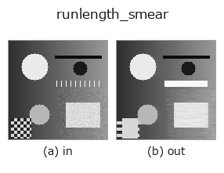

morphology op• 데이터 종류: image → image
• 호출: fullseye.apply(img, "runlength_smear", a=0.5, b=0.5)(2-D 는 이미지 1 장 + 스칼라 노브 2 개 a,b∈[0,1] 모델)

*그림은 128×128 합성 입력에서 실제로 실행한 출력. 왼쪽이 입력, 오른쪽이 출력. 점군은 위에서 본 산점도(밝기 = z), 1-D 열은 꺾은선, 볼륨은 z 방향 최대값 투영, 동영상은 가운데 프레임, 복소 영상은 진폭이며, 그림이 되지 않는 반환값은 값 자체를 표시한다.*
노브 a 를 훑기(0.1 / 0.5 / 0.9, 다른 노브는 기본값):
▸ runlength_smear: 노브 a 스윕 (문서 사이트)
노브 b 를 훑기(0.1 / 0.5 / 0.9, 다른 노브는 기본값):
▸ runlength_smear: 노브 b 스윕 (문서 사이트)
다른 영상에서도(합성 장면 / 사진 / 동전. 윗줄이 입력, 아랫줄이 그 출력. 노브는 기본값):
▸ runlength_smear: 다른 입력 이미지 (문서 사이트)
*4열은 컬러 (H,W,3) 입력. 이 op는 채널을 넘나들지 않고 컬러를 다룰 수 있다(색 채널을 세 번째 공간축으로 컨볼루션하지 않음).*
런 길이 평활화(RLSA). 행 안의 글자 사이 틈을 메워 글자를 '행' 덩어리로 묶는다.
판면 분석(어디가 행이고 어디가 단인지)의 기본 부품. a가 메울 틈의 길이를 3,5,9,15,25,41,65화소(b의 방향을 따른 선)로 바꾸고, b가 방향과합성을 고른다: b <= 0.5는 수평만, 0.5 < b <= 0.75는 수직만, b > 0.75는 수평과 수직 중 작은 쪽(= 고전 RLSA의 2패스 AND 합성. 양방향으로 메워진 곳만 남으므로 행뿐 아니라 단 구성의 덩어리가 나온다).
★기존의 gclose와 일부 겹친다. gclose는 b로 수평선 구조 요소를고를 수 있으므로 수평 RLSA는 원리적으로 쓸 수 있다. 여기서 더하는 것은 2가지 ——
(1) 틈을 3~9화소가 아니라 65화소까지 바꿀 수 있다(_k의 상한으로는 행이 이어지지 않는다.
문자 간격은 96 px 글자라면 10~30화소가 된다), (2) 2방향의 AND 합성은단일 구조 요소에 의한 닫힘으로는 쓸 수 없다. 한쪽만이라면 gclose를 쓰는 편이 빠르다.
농담 영상에 그대로 걸린다(내부에서 이진화하지 않는다). 회색조 닫힘 연산이므로 어두운 틈을 메우는 방향으로 작용한다 —— 글자가 밝고 배경이 어두운 영상에서 쓸 것. 반대라면 먼저 invert를 통과시킨다. 가장자리 처리는 scipy.ndimage의 기본값 reflect. 빈 프레임(상수 영상)은 그대로 반환된다(메울 틈이 없다). 값 범위는 입력 그대로 [0,1]에 들어가며, 영상별 정규화는 하지 않는다(값은 영상 간에 비교할 수 있다).
• gallery2d_morphology 패밀리 가이드
• 샘플 데이터 카탈로그(DL URL / 라이선스) —— 2-D 는 skimage.data(BSD/public)+ 합성, 3-D 는 실데이터 소스(Stanford/PDS 등)의 DL URL.
• 연산자의 내력·참고문헌 —— 이 연산자 족의 바탕이 된 연구/기법의 출처.
• 알고리즘의 정전(저자·연도)과 용도는 위의 패밀리 사용 가이드에 적혀 있습니다.
아래 프로그램은 실제로 실행됨을 확인했습니다(그림과 같은 입력). Studio 도움말에서는 이 블록이 버튼이 되어 즉시 불러와 실행할 수 있습니다.
runlength_smear 0.35 0.50
• gallery2d_morphology — py -3.11 examples/gallery2d_morphology.py
image 를 입력으로 받는 것)identity · gaussian · mean_box · bilateral · unsharp · median · min_filter · max_filter
morphology)gerode · gdilate · gopen · gclose · tophat · bothat · morph_grad · persistence_map
*Provenance: ops.py — 2D 연산자 레지스트리. 이 op 노트는 tools/opdocs.py md 가 자동 생성합니다(직접 편집하지 마세요).*
© 2026 Kazufumi Furuse — Fullseye operator documentation. Licensed under Apache-2.0.